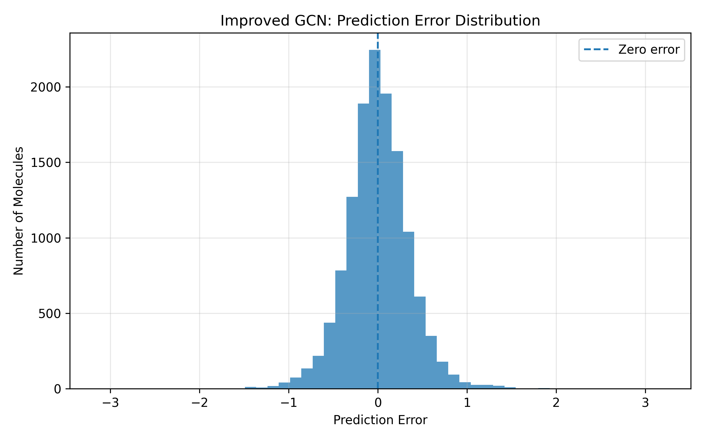
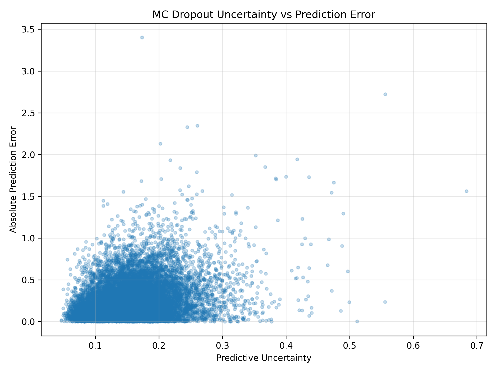
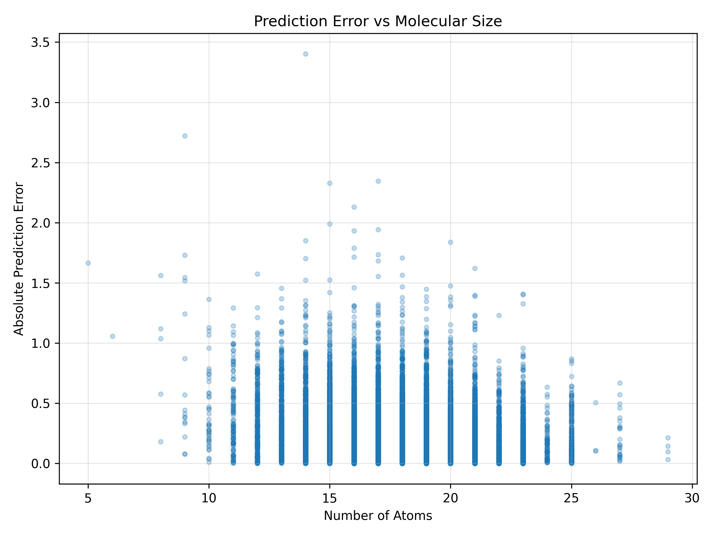
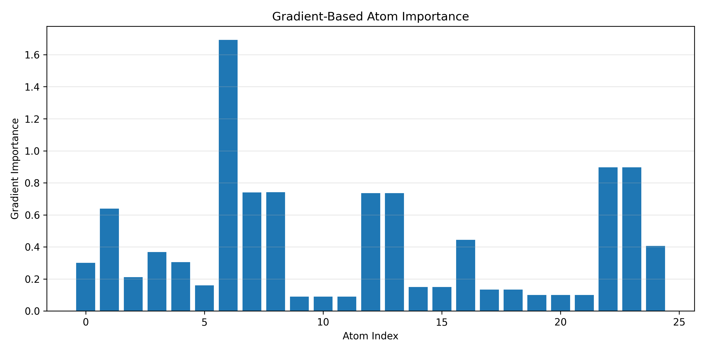

See what the
molecule knows.
A transparent workspace for graph neural network predictions on the QM9 molecular dataset — from molecular graph to uncertainty-aware HOMO–LUMO gap.
11-D Atom Features
Atomic number (H, C, N, O, F), hybridization (sp, sp2, sp3), formal charge, aromaticity, and valency degree form the node feature matrix X.
GNN Message Passing
GCN aggregates normalized localized degree neighborhoods. Benchmarked alongside GraphSAGE sampling and GAT attention architectures.
MC Dropout Uncertainty
Test-time stochastic forward passes (p=0.2) quantify epistemic uncertainty, stratifying high error molecules (MAE 0.306 eV vs 0.243 eV).
Gradient Explainability
Backpropagates loss gradients to atom features, producing interpretable L2 attribution maps across conjugated systems and heteroatoms.
Find a molecular starting point.
Common small molecules for quick demos. Property values are illustrative approximations, not QM9 ground truth.
Ethanol
CCO
Supports CSVs with a smiles column and numeric targets. Validates molecular structures using RDKit.
Predict a property. Inspect the confidence.
Use a library record or enter a custom SMILES string. Without trained weights mounted, results come from a clearly labeled heuristic.
Ready for inference
Your result will appear here
Enter a SMILES string such as CCO and run the prediction.
Ask the project.
It knows the supplied results and this app's caveats. It can explain the prediction in your workspace, compare architectures, or help you read the uncertainty.
Research assistant
context: C6H6 · 5.96 eVAsk about this project's models, metrics, or the prediction in your workspace.
Hello! I am your QM9-GraphMol Research Assistant.
I can help explain any molecular prediction in your workspace, compare GCN vs GAT vs GraphSAGE, explain Monte Carlo Dropout uncertainty, or detail the 11 QM9 atom features.
Every prediction should show its work.
Atom weights here come from an element-and-connectivity heuristic, not from the model. Gradient-based attribution needs the trained checkpoint.
Deep dive into the neural mechanics: how molecular geometry is mapped to tensor embeddings, how message-passing layers aggregate neighborhood features, and why this chemical topology leads to the predicted HOMO–LUMO gap.
Graph Representation & 11-D Encoding
Molecule mapped into a graph where atoms are nodes and covalent bonds are edges. Features encode atomic number, hybridization (sp/sp2/sp3), formal charge, aromaticity, and valency degree.
GNN Message Passing Dynamics
Across 3 GCN convolution layers, node embeddings propagate using normalized adjacency D^{-1/2} A D^{-1/2}. Global pooling flattens atom embeddings into a unified molecular invariant.
Frontier Molecular Orbital (FMO) Theory
Conjugated π-systems and electronegative heteroatoms modulate highest occupied (HOMO) and lowest unoccupied (LUMO) energy eigenvalues, determining the excitation energy gap.
Monte Carlo Dropout Epistemic Variance
50 stochastic forward passes at test time (p=0.2) quantify model parameter variance, correlating with held-out prediction residual errors across QM9 test molecules.
Measure the trade-offs.
Supplied test-set results for the three comparison architectures, plus the improved GCN experiment.
| MODEL | MAE / EV | RMSE | R² |
|---|---|---|---|
| GCN | 0.249 | 0.333 | 0.934 |
| GraphSAGE | 0.255 | 0.348 | 0.927 |
| Improved GCN | 0.265 | 0.356 | 0.924 |
| GAT | 0.652 | 0.829 | 0.588 |
Actual vs Predicted Fit
R² = 0.934
Training & Validation MSE
Convergence
Error Distribution
Residuals
Uncertainty vs Error
Correlation 0.22
Error vs Molecule Size
Topology
Atom Saliency Map
Attribution